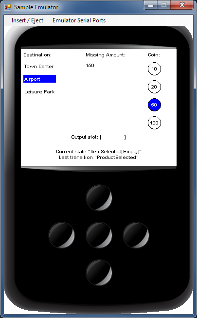
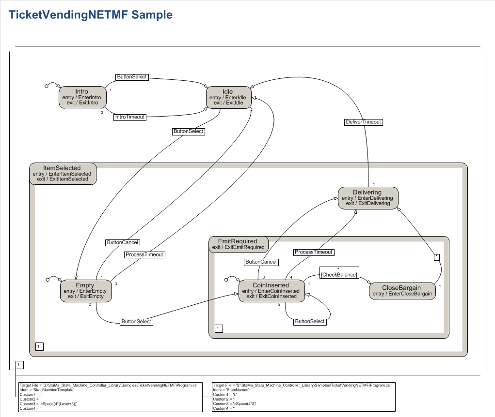

What is StaMa?
A UML and Statechart inspired state machine library with hierarchical and orthogonal states for .NET platforms.
Implemented in C#, suitable for all .NET enabled Windows platforms (including UWP, IoT, Mono) and NETMF.
Functionality
Hierarchical (composite) and orthogonal (concurrent) states.
Fork and join transitions.
Entry-, exit-, do- and transition-actions.
Guard conditions.
Shallow history.
Run-to-completion processing.
Provides Statecharts functionality comparable to SCXML.
Low garbage object creation during runtime.
Free from runtime thread synchronization calls and timers.
Multiple state machine instances can be created from a single state machine definition.
Optional code generation based on Microsoft Visio diagrams.
Delivered as
Delivered as
-
Portable assembly for .NET Framework 4, Silverlight 5, Windows 8, Windows Phone 8.1, Windows Phone Silverlight 8 and higher versions, runs on Mono.
-
Assembly for .NET Micro Framework 4.3
A detailed description of the API and behavior is available on https://StaMa-StateMachine.github.io/StaMa/.
Links
Repository on GitHub
NuGet Download
Author, Support and Contact
Sample code
The following code illustrates how a state machine is implemented using StaMa and how to send events to the state machine that trigger the exectution of transitions.
The image below the code shows the state machine as a diagram. It is created with Microsoft Visio using specific shapes which allows to generate the structural definition of the state machine code from the diagram.
using System;
using StaMa;
class Program
{
static void Main(string[] args)
{
StateMachineTemplate t = new StateMachineTemplate();
t.Region("Stopped", false);
t.State("Stopped");
t.Transition("T1", "Running", "Play");
t.EndState();
t.State("Loaded", StartMotor, StopMotor);
t.Transition("T2", "Stopped", "Stop");
t.Region("Running", false);
t.State("Running", EngageHead, ReleaseHead);
t.Transition("T3", "Paused", "Pause");
t.EndState();
t.State("Paused");
t.Transition("T4", "Running", "Play");
t.EndState();
t.EndRegion();
t.EndState();
t.EndRegion();
StateMachine stateMachine = t.CreateStateMachine();
stateMachine.Startup();
stateMachine.SendTriggerEvent("Play");
stateMachine.SendTriggerEvent("Pause");
stateMachine.SendTriggerEvent("Stop");
stateMachine.Finish();
}
private static void StartMotor(StateMachine stateMachine, object triggerEvent, EventArgs eventArgs)
{
System.Console.WriteLine("StartMotor");
}
private static void StopMotor(StateMachine stateMachine, object triggerEvent, EventArgs eventArgs)
{
System.Console.WriteLine("StopMotor");
}
private static void EngageHead(StateMachine stateMachine, object triggerEvent, EventArgs eventArgs)
{
System.Console.WriteLine("EngageHead");
}
private static void ReleaseHead(StateMachine stateMachine, object triggerEvent, EventArgs eventArgs)
{
System.Console.WriteLine("ReleaseHead");
}
}The "Play", "Pause" or "Stop" events trigger the execution of transitions and as a result the exit actions and entry actions StartMotor, StopMotor, EngageHead and ReleaseHead of the involved states are executed.
.NET Micro Framework
StaMa perfectly matches the limitations of small devices and NETMF. In particular:
-
StaMa doesn't use any runtime resources like timers, threads or thread synchronization objects. Clients can implement the threading and synchronization according to their projects needs.
-
During state machine operation only few and small object allocations are necessary (mostly iterators), StaMa doesn't stress the garbage collector.
-
StaMa isn't intrinsically tied to generics which are (unfortunately) not supported by NETMF.
-
StaMa has a state machine instance concept. In case multiple instances with the same behavior are needed, there is only little memory and initialization overhead for the 2nd, 3rd, ... 100th instance. All structural and descriptive information (strings and delegates) are kept in the StateMachineTemplate, StateMachine instances are definitely flyweight.
Below images show a screenshot of the NETMF emulator app running a ticket vending machine sample, implemented with StaMa and the corresponding state diagram in Microsoft Visio.
 